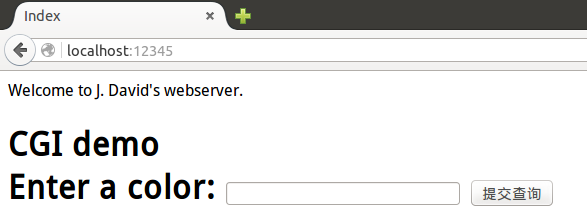
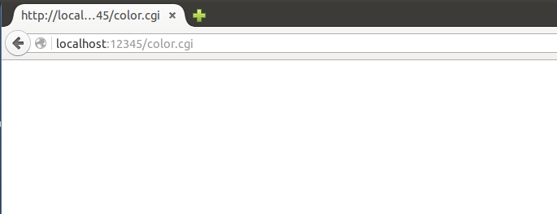
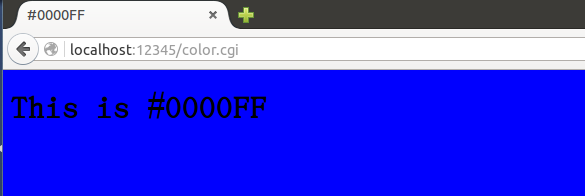
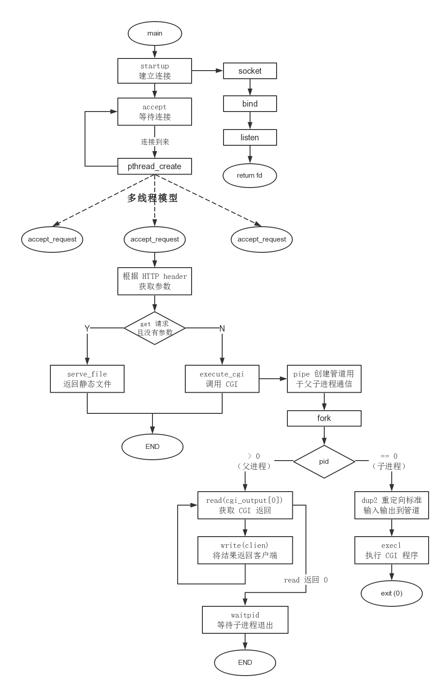
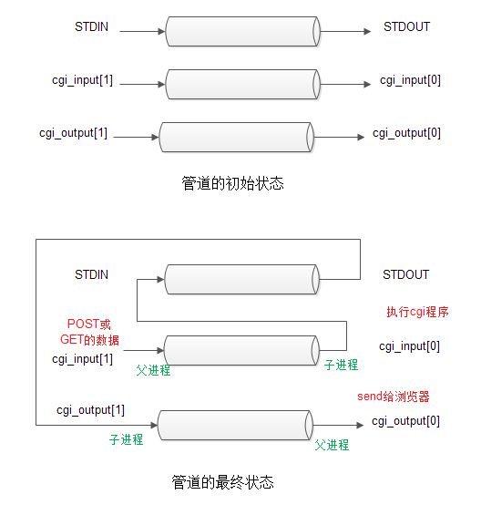
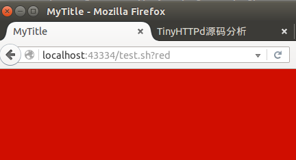
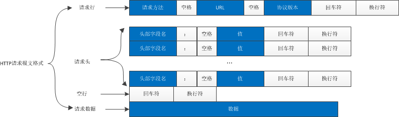
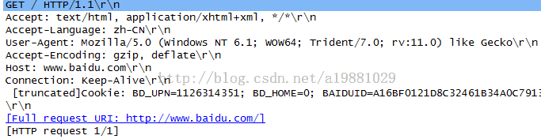
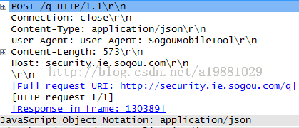
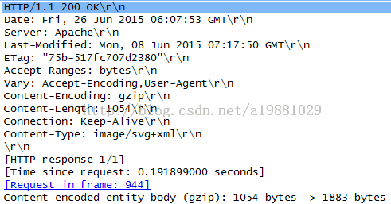

TinyHTTPd 源码分析
Table of Contents
1 简介
TinyHTTPd1是一个超轻量型 Http Server，使用 C 语言开发，httpd 只有
0
行，附带一个简单的 Client，也只有
nil
行，可以通过阅读这段代码理解一个 Http Server 的本质。
2 编译
源程序是在 sparc solaris 2.6 下编译的，在 linux 下编译需要进行以下修改：
pthread_create函数第三个参数即回调函数名，要求是(void*)(*start_rtn)(void*)类型，但是代码中提供的accept_request函数是void (*)(int)类型的，因此无法通过编译。第 33 行函数声明
/* void accept_request(int); */ void *accept_request(void *);
第 52 行相应的函数定义
/* void accept_request(int client) */ void *accept_request(void * tclient)第 131 行添加返回值
return NULL;
第 503 行
/* if (pthread_create(&newthread , NULL, accept_request, client_sock) != 0) */ if (pthread_create(&newthread , NULL, accept_request, (void *)&client_sock) != 0)- 传入参数类型错误造成的，分别在 441 和 488 行，要求参数为 unsigned int 指针，传入为 int 类型，所以将相关参数类型改成
socklen_t即可。第 441 行
/* int namelen = sizeof(name); */ socklen_t namelen = sizeof(name);第 488 行
/* int client_name_len = sizeof(client_name); */ socklen_t client_name_len = sizeof(client_name); - 第 277 行 逻辑错误
/* execl(path, path, NULL); */ execl(path, query_string, NULL); - Makefile 添加 debug 选项、去掉 libsocket 的依赖。
# gcc -W -Wall -lsocket -lpthread -o httpd httpd.c gcc -g -W -Wall httpd.c -o httpd -lpthread
执行 make 即可。
3 使用2
浏览器访问 localhost:12345 可以看到 index.html 页面。

Figure 1: index.html
页面提示说要在输入框里面输入一个 color，但是填了 red 什么都没有什么正常的反馈，看一下源码：
<FORM ACTION="color.cgi" METHOD="POST">
Enter a color: <INPUT TYPE="text" NAME="color">
<INPUT TYPE="submit">
简单说一下 Form 本身的参数：ACTION 是指向 CGI 脚本的 URL。METHOD 可以是 GET 或 POST。 区别在于使用 GET 的情况下，值会显示在浏览器的地址栏里，而使用 POST 时，他们会被隐藏。
简单来看一下 color.cgi：
加载 CGI 模块，并创建一个新的 CGI 对象，my 作用类似 lua 里面的 local，用来定义变量。
use CGI;
my($cgi) = new CGI;
这里有两个目的：一个是打印出 HTTP 响应报头，一个是从提交的表单中获取参数。
print $cgi->header; # 打印 HTTP 响应报头，类似 print "Content-Type: text/html; charset=ISO-8859-1\r\n";
my($color) = "blue"; # 定义 color 变量
$color = $cgi->param('color') if defined $cgi->param('color'); # 从提交的表单中获取参数
cgi 输出：
print $cgi->start_html(-title => uc($color),-BGCOLOR => $color); # start the html
print $cgi->h1("This is $color"); # level1 header
print $cgi->end_html; # end the html
看到这里应该想到返回的 html 的内容了：一个设置了标题、背景色、header 的 html 页面。我们试试：在输入框填入#0000FF（蓝色），提交。

可是还是没有返回结果，问题出在哪里呢？先单独执行一下 color.cgi 看看是不是它的问题。
$ ./color.cgi
bash: ./color.cgi: /usr/local/bin/perl: 解释器错误: 没有那个文件或目录
原来是 perl 的路径没找到。找一下本机的 perl 路径：
which perl
重新设定 color.cgi 中的 perl 路径，
#!/usr/bin/perl -Tw
再试：

Figure 3: 正常显示
4 源码分析3
4.1 流程图4

Figure 4: 程序流程图
4.2 函数分析
4.2.1 main
main 函数通过 startup 函数来绑定和监听端口,accept 一个客户端链接后创建一个线程调用 accept_request 函数来处理用户发来的 HTTP 请求报文。
4.2.2 startup
startup 函数很简单，不做过多的分析。
4.2.3 accept_request
accept_request 通过 get_line 按行处理 HTTP 请求。
- 请求行
- 将请求方法放在 method 中，只能处理 get 或者 post 方法，如果是 post 方法设置 cgi 处理标识。
- 判断是何种 method（GET or POST）以及获取 url。对于 GET 方法，如果携带参数，设置 cgi 处理标识，截断 url，并将
query_string指针指向 url 中 ? 后面的 GET 参数。 - 将 htdocs 与 url 拼接为 path，如果 path 最后一个字符是‘/’，则继续拼接 index.html，即默认访问 path 下的 index.html 文件。
- 如果 path 所指的文件不存在，读取并丢弃剩余请求首部，并向客户端返回 404 错误。
- 如果 path 所指文件存在，是目录则拼接 index.html，是文件则根据是否可执行设置 cgi 标识。
- 根据 cgi 标识决定执行
serve_file还是execute_cgi。
void accept_request(int client)
{
char buf[1024];
int numchars;
char method[255]; //保存请求行中的请求方法 GET or POST
char url[255]; //请求行的 url 字段
char path[512]; //请求行中文件在服务器上的路径
size_t i, j;
struct stat st;
int cgi = 0; /* becomes true if server decides this is a CGI
* program */
char *query_string = NULL; //get 请求？之后的查询参数
numchars = get_line(client, buf, sizeof(buf));//获取请求行
i = 0; j = 0;
/* 处理请求行 */
/* 请求方法 */
while (!ISspace(buf[j]) && (i < sizeof(method) - 1))
{
method[i] = buf[j];//根据 http 请求报文格式，这里得到的是请求方法
i++; j++;
}
method[i] = '\0';
/* 省略 */
/* URL 字段 */
while (!ISspace(buf[j]) && (i < sizeof(url) - 1) && (j < sizeof(buf)))
{
url[i] = buf[j];//获取的是 URL（互联网标准资源的地址）
i++; j++;
}
url[i] = '\0';
if (strcasecmp(method, "GET") == 0)
{
query_string = url;//请求信息
while ((*query_string != '?') && (*query_string != '\0'))//截取'?'前的字符
query_string++;//问号前面是路径，后面是参数
if (*query_string == '?')//有'?'，表明动态请求
{
cgi = 1;
*query_string = '\0';
query_string++;
}
}
/* 根据 url 拼接 url 在服务器上的路径 */
sprintf(path, "htdocs%s", url);
if (path[strlen(path) - 1] == '/')//如果 url 是目录(/)，则加上 index.html
strcat(path, "index.html");//
/* 查找 path 指向的文件 */
if (stat(path, &st) == -1) {//执行失败，文件未找到
/*丢弃所有 headers 的信息*/
while ((numchars > 0) && strcmp("\n", buf)) /* read & discard headers */
numchars = get_line(client, buf, sizeof(buf));//从客户端读取数据进 buf
not_found(client);//回应客户端找不到
}
else
{
/*如果 path 是个目录，则默认使用该目录下 index.html 文件*/
if ((st.st_mode & S_IFMT) == S_IFDIR)
strcat(path, "/index.html");
/* 如果 path 是可执行文件，设置 cgi 标识 */
if ((st.st_mode & S_IXUSR) ||
(st.st_mode & S_IXGRP) ||
(st.st_mode & S_IXOTH) )
cgi = 1;
if (!cgi)//静态页面请求
serve_file(client, path);//直接返回文件信息给客户端，静态页面返回
else//动态页面请求
execute_cgi(client, path, method, query_string);//执行 cgi 脚本
}
close(client);//关闭客户端套接字
}
4.2.4 get_line
该函数不管行原来是以 \n、\r 还是 \r\n 结束，均转化为以\n 再加\0 字符结束。
int get_line(int sock, char *buf, int size)
{
int i = 0;
char c = '\0';
int n;
/* http 请求报文每行都是\r\n 结尾 */
while ((i < size - 1) && (c != '\n'))
{
n = recv(sock, &c, 1, 0);
if (n > 0)
{
if (c == '\r')//如果是回车符，继续读取
{
/* MSG_PEEK 探测下一个字符是不是\n */
n = recv(sock, &c, 1, MSG_PEEK);
if ((n > 0) && (c == '\n'))//如果是回车换行符说明读完一行
recv(sock, &c, 1, 0);
else
c = '\n';//换行替换回车，当作一行返回
}
buf[i] = c;
i++;
}
else
c = '\n';
}
buf[i] = '\0'; //返回一行
return(i);//返回读到的字符个数(包括'\0')
}
4.2.5 execute_cgi
主要做的事情就是 fork 一个子进程执行可执行文件，然后通过管道将结果返回父进程，进而返回客户端。
- 如果是 get 方法，就读取并丢弃整个 http 首部。如果是 post 方法，还会从中
content_length长度。 - 建立两个管道，
cgi_input和cgi_output，并 fork 一个进程（必须 fork 子进程，pipe 管道才有意义）。建立父子进程间的通信机制。 - 在子进程中，对其进程下的管道进行重定向，并设置对应的环境变量（method、
query_string、content_length），这些环境变量都是为了给 cgi 脚本调用，接着用 execl 运行 cgi 脚本，可以看出 cgi 脚本的执行在子进程中进行，然后结果通过管道以及重定向返回给父进程。 - 父进程中，关闭管道一端，如果是 POST 方式，则把 POST 数据写入
cgi_intput，已被重定向到 STDIN，读取cgi_output。 管道输出到客户端（浏览器输出），具体流程图参见上面的管道最终状态图。接着关闭所有管道，等待子进程结束。 - 关闭连接，完成一次 HTTP 请求与回应。

Figure 5: 父子进程管道通信
void execute_cgi(int client, const char *path, const char *method, const char *query_string)
{
char buf[1024];
int cgi_output[2];
int cgi_input[2];
pid_t pid;
int status;
int i;
char c;
int numchars = 1;
int content_length = -1;
buf[0] = 'A'; buf[1] = '\0';
if (strcasecmp(method, "GET") == 0)//GET 方法：一般用于获取/查询资源信息
while ((numchars > 0) && strcmp("\n", buf)) /* read & discard headers 读取并丢弃 HTTP 请求 */
numchars = get_line(client, buf, sizeof(buf));
else /* POST 一般用于更新资源信息*/
{
numchars = get_line(client, buf, sizeof(buf));
//获取 HTTP 消息实体的传输长度
while ((numchars > 0) && strcmp("\n", buf))//不为空且不为换行符
{
buf[15] = '\0';
if (strcasecmp(buf, "Content-Length:") == 0)//是否为 Content-Length 字段
content_length = atoi(&(buf[16]));//Content-Length 用于描述 HTTP 消息实体的传输长度
numchars = get_line(client, buf, sizeof(buf));
}
if (content_length == -1) {
bad_request(client);//请求的页面数据为空，没有数据，就是我们打开网页经常出现空白页面
return;
}
}
sprintf(buf, "HTTP/1.0 200 OK\r\n");//
send(client, buf, strlen(buf), 0);
if (pipe(cgi_output) < 0) {
cannot_execute(client);//管道建立失败，打印出错信息
return;
}
if (pipe(cgi_input) < 0) {
cannot_execute(client);
return;
}
if ((pid = fork()) < 0) {
cannot_execute(client);
return;
}
//实现进程间的管道通信机制
/*子进程继承了父进程的 pipe，然后通过关闭子进程 output 管道的输出端，input 管道的写入端；
关闭父进程 output 管道的写入端，input 管道的输出端*/
//子进程，
if (pid == 0) /* child: CGI script */
{
char meth_env[255];
char query_env[255];
char length_env[255];
//复制文件句柄，重定向进程的标准输入输出
//dup2 的第一个参数描述符关闭
dup2(cgi_output[1], 1);//标准输出重定向到 output 管道的写入端
dup2(cgi_input[0], 0);//标准输入重定向到 input 管道的读取端
close(cgi_output[0]);//关闭 output 管道的写入端
close(cgi_input[1]);//关闭输出端
sprintf(meth_env, "REQUEST_METHOD=%s", method);
putenv(meth_env);
if (strcasecmp(method, "GET") == 0) {//GET
/*设置 query_string 的环境变量*/
sprintf(query_env, "QUERY_STRING=%s", query_string);
putenv(query_env);
}
else { /* POST */
/*设置 content_length 的环境变量*/
sprintf(length_env, "CONTENT_LENGTH=%d", content_length);
putenv(length_env);
}
execl(path, path, NULL);//exec 函数簇，执行 CGI 脚本，获取 cgi 的标准输出作为相应内容发送给客户端
//通过 dup2 重定向，标准输出内容进入管道 output 的输入端
exit(0);//子进程退出
}
else { /* parent */
close(cgi_output[1]);//关闭管道的一端，这样可以建立父子进程间的管道通信
close(cgi_input[0]);
/*通过关闭对应管道的通道，然后重定向子进程的管道某端，这样就在父子进程之间构建一条单双工通道
如果不重定向，将是一条典型的全双工管道通信机制
*/
if (strcasecmp(method, "POST") == 0)//POST 方式，将指定好的传输长度字符发送
/*接收 POST 过来的数据*/
for (i = 0; i < content_length; i++) {
recv(client, &c, 1, 0);//从客户端接收单个字符
write(cgi_input[1], &c, 1);//写入 input，然后重定向到了标准输入
//数据传送过程：input[1](父进程) ——> input[0](子进程)[执行 cgi 函数] ——> STDIN ——> STDOUT
// ——> output[1](子进程) ——> output[0](父进程)[将结果发送给客户端]
}
while (read(cgi_output[0], &c, 1) > 0)//读取 output 的管道输出到客户端，output 输出端为 cgi 脚本执行后的内容
send(client, &c, 1, 0);//即将 cgi 执行结果发送给客户端，即 send 到浏览器，如果不是 POST 则只有这一处理
close(cgi_output[0]);//关闭剩下的管道端，子进程在执行 dup2 之后，就已经关闭了管道一端通道
close(cgi_input[1]);
waitpid(pid, &status, 0);//等待子进程终止
}
}
index.html 页面的输入框是使用的 post 方法，那么我们动手使用使用 get 方法也应该。但是 color.cgi 没有实现这个功能，我们用 shell 脚本来执行试试。
#!/bin/sh
echo "Content-type:text/html"
echo
echo '<html><head><meta charset="utf-8"><title>MyTitle</title></head><body bgcolor="' $0 '">'
#$0 这个参数传递的听怪异的，主要是 execl 函数没写好，懒得改了
echo "</body></html>"
返回一个我们设置颜色的页面，注意要加 test.sh 添加执行权限，才会被视为执行 cgi 程序来执行。
chmod +x tinyhttpd-0.1.0/htdocs/test.sh
当在浏览器中直接输入
localhost:12345/test.sh?red
服务器作出的响应。

Figure 6: cgi test.sh 运行
5 附录
5.1 HTTP 报文格式
HTTP 有两种报文：请求报文和响应报文，具体介绍如下
5.1.1 请求报文
一个 HTTP 请求报文由请求行（request line）、请求头部（header）、空行和请求数据 4 个部分组成，下图给出了请求报文的一般格式。

Figure 7: HTTP 请求报文格式
- 请求行
请求行由请求方法字段、URL 字段和 HTTP 协议版本字段 3 个字段组成，它们用空格分隔。例如，GET /index.html HTTP/1.1。
HTTP 协议的请求方法有 GET、POST、HEAD、PUT、DELETE、OPTIONS、TRACE、CONNECT。这里介绍最常用的 GET 方法和 POST 方法。
GET：当客户端要从服务器中读取文档时，使用 GET 方法。GET 方法要求服务器将 URL 定位的资源放在响应报文的数据部分，回送给客户端。使用 GET 方法时，请求参数和对应的值附加在 URL 后面，利用一个问号（“?”）代表 URL 的结尾与请求参数的开始，传递参数长度受限制。例如，/index.jsp?id=100&op=bind。
POST：当客户端给服务器提供信息较多时可以使用 POST 方法。POST 方法将请求参数封装在 HTTP 请求数据中，以名称 / 值的形式出现，可以传输大量数据。
协议版本的格式为：HTTP / 主版本号. 次版本号，常用的有 HTTP/1.0 和 HTTP/1.1。
- 请求头部
请求头部由关键字 / 值对组成，每行一对，关键字和值用英文冒号 “:” 分隔。请求头部通知服务器有关于客户端请求的信息。常见请求头如下：
- Host 接受请求的服务器地址，可以是 IP: 端口号，也可以是域名
- User-Agent 发送请求的应用程序名称
- Connection 指定与连接相关的属性，如 Connection:Keep-Alive
- Accept-Charset 通知服务端可以发送的编码格式
- Accept-Encoding 通知服务端可以发送的数据压缩格式
- Accept-Language 通知服务端可以发送的语言
- 空行
最后一个请求头之后是一个空行，发送回车符和换行符，通知服务器以下不再有请求头。
- 请求数据
请求数据不在 GET 方法中使用，而是在 POST 方法中使用。POST 方法适用于需要客户填写表单的场合。与请求数据相关的最常使用的请求头是 Content-Type 和 Content-Length。

Figure 8: GET 请求示例

Figure 9: POST 请求示例
5.1.2 响应报文
HTTP 响应报文主要由状态行、响应头部、响应正文 3 部分组成。
Figure 10: HTTP 响应报文格式
- 状态行
状态行由 3 部分组成，分别为：协议版本，状态码，状态码描述，之间由空格分隔。状态代码为 3 位数字，200~299 的状态码表示成功，300~399 的状态码指资源重定向，400~499 的状态码指客户端请求出错，500~599 的状态码指服务端出错（HTTP/1.1 向协议中引入了信息性状态码，范围为 100~199）。这里列举几个常见的：
- 200：响应成功
- 302：跳转，跳转地址通过响应头中的 Location 属性指定（JSP 中 Forward 和 Redirect 之间的区别）
- 400：客户端请求有语法错误，不能被服务器识别
- 403：服务器接收到请求，但是拒绝提供服务（认证失败）
- 404：请求资源不存在
- 500：服务器内部错误
- 响应头部
与请求头部类似，为响应报文添加了一些附加信息。常见响应头部如下：
- Server：服务器应用程序软件的名称和版本
- Content-Type：响应正文的类型（是图片还是二进制字符串）
- Content-Length：响应正文长度
- Content-Charset：响应正文使用的编码
- Content-Encoding：响应正文使用的数据压缩格式
- Content-Language：响应正文使用的语言

Figure 11: HTTP 响应示例
5.2 换行、回车
5.2.1 历史
这里主要介绍“回车”（carriage return \r）和 “换行”（line feed \n）这两个概念的来历和区别。
在计算机还没有出现之前，有一种叫做电传打字机（Teletype Model 33）的玩意，每秒钟可以打 10 个字符。但是它有一个问题，就是打完一行换行的时候，要用去 0.2 秒，正好可以打两个字符。要是在这 0.2 秒里面，又有新的字符传过来，那么这个字符将丢失。
于是，研制人员想了个办法解决这个问题，就是在每行后面加两个表示结束的字符。一个叫做 “回车”，告诉打字机把打印头定位在左边界；另一个叫做 “换行”，告诉打字机把纸向下移一行。这就是 “换行” 和 “回车” 的来历，从它们的英语名字上也可以看出一二。
后来，计算机发明了，这两个概念也就被般到了计算机上。那时，存储器很贵，一些科学家认为在每行结尾加两个字符太浪费了，加一个就可以。于是，就出现了分歧：Unix 系统里，每行结尾只有 “<换行>（\n）”；Windows 系统里面，每行结尾是 “<换行><回车>（\n\r）”，Mac 系统里，每行结尾是 “<回车>（\r）”。一个直接后果是，Unix/Mac 系统下的文件在 Windows 里打 开的话，所有文字会变成一行；而 Windows 里的文件在 Unix/Mac 下打开的话，在每行的结尾可能会多出一个 ^M 符号。
c 语言编程时(linux) \r 就是回到本行行首，这就会把这一行以前的输出覆盖掉。
#include <stdio.h>
int main(int argc, char *argv[])
{
printf("hahahaha\rxixixi");
return 0;
}
./printf-ret
TODO: 上面代码段在 export 时候没有正确输出结果，tty 上面没有问题，需要检查。
xixixi
最后只显示 xixi，而 hahaha 被覆盖了。
\n 是回车＋换行，把光标先移到行首，然后换到下一行，也就是下一行的行首。
#include <stdio.h>
int main(int argc, char *argv[])
{
printf("hahaha\nxixi\n");
return 0;
}